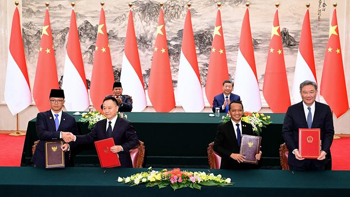
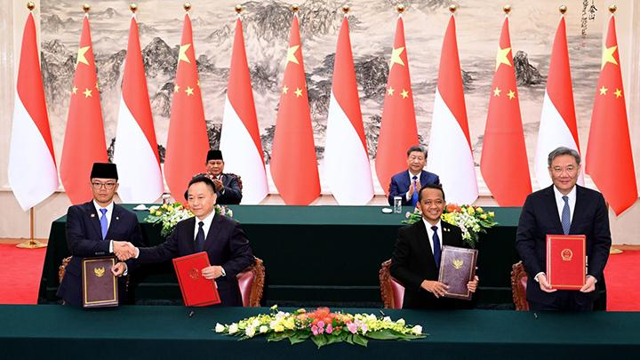

Bilateral adalah kerjasama antara dua negara dan salah satu contohnya adalah kerjasama Indonesia dan Tiongkok dalam ekonomi biru. Kerjasama bilateral membantu antar negara untuk lebih memfokuskan upaya negara dan manfaat bagi keduanya. Kerjasama ini mengurus perkembangan industri perikanan, sumber daya perairan yang berkelanjutan, dan pertumbuhan ekonomi serta lapangan kerja yang juga menjaga kesehatan ekosistem laut. Contoh kerjasama mereka dalam ekonomi biru adalah perdagangan produk perikanan dan membentuk pusat penelitian sebagai kolaborasi ilmiah agar mendorong peningkatan ilmu dan teknologi dalam bidang laut terutama bagi Tiongkok untuk mencegah penyakit. Selain untuk menghindar penyakit, juga memfokuskan dalam pengelolaan, konservasi ekosistem, adaptasi perubahan iklim dalam perairan. Kerjasama ini lebih untuk kepentingan ekonomi dan lingkungan serta ilmu pengetahuan. Dengan adanya kerjasama ini, mereka dapat berbagi kelebihan agar dapat menghindar/mencegah masalah dan membantu meluaskan perdagangan.
 
